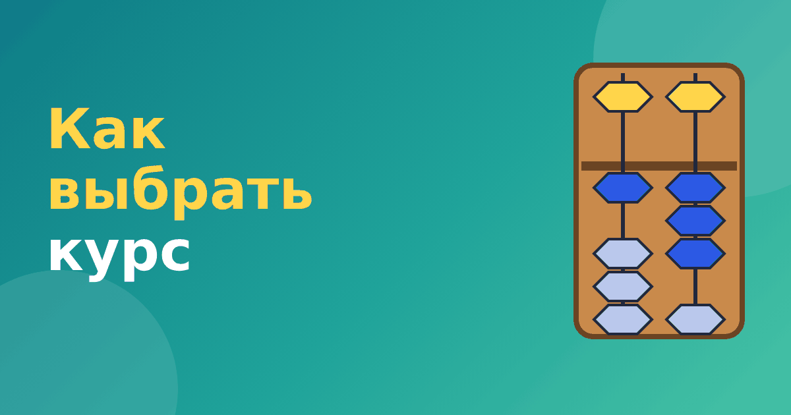

Как выбрать курс ментальной арифметики: критерии и вопросы

Когда вы решили попробовать абакус, возникает следующий вопрос: куда идти? Курсов много, цены и обещания сильно отличаются. Мы собрали практические критерии, чтобы вы могли спокойно выбрать курс ментальной арифметики и не переплатить за красивые слова.
Онлайн или очно
У каждого формата свои плюсы.
- Очные занятия. Преподаватель видит, как ребёнок двигает бусины, исправляет хват и осанку, поддерживает интерес. Подходит младшим детям, которым трудно заниматься перед экраном. Минус: нужно ездить и подстраиваться под расписание.
- Ментальная арифметика онлайн. Удобно, не нужно тратить время на дорогу, можно заниматься в привычной обстановке. Для детей 7–12 лет, которые умеют концентрироваться, формат вполне подходит. Минус: нужна дисциплина и помощь родителя, а ошибки в движениях сложнее заметить.
- Самостоятельные занятия по приложению или тренажёру. Самый дешёвый вариант. Подходит для знакомства и закрепления, особенно с активным участием родителя. Мы разбирали это в статье с чего начать ментальную арифметику дома.
На что смотреть в программе
Хорошая программа понятна и прозрачна. Попросите у школы описание.
- Из каких уровней состоит курс и сколько он длится.
- Что ребёнок будет уметь после каждого уровня: например, «складывает двузначные числа на абакусе».
- Когда начинается мысленный счёт и как проходит переход.
- Как проверяется результат: тесты, срезы, домашние задания.
На что смотреть в преподавателе
Для ребёнка важны терпение и умение объяснять. Спросите, сколько детей в группе: в группе из 15 человек внимание на каждого почти нет. Попросите прийти на пробное занятие и посмотрите, как преподаватель общается с детьми.
Пробное занятие и условия
Хорошие школы предлагают пробное занятие. Используйте его, чтобы понять, интересно ли ребёнку. Уточните, можно ли вернуть деньги за неиспользованные занятия, не заставляют ли покупать оплату сразу на год и сколько стоят пособия. Если от вас требуют решить за час, это тревожный сигнал.
Тревожные сигналы в рекламе
- «Результат за месяц» без уточнения, какой именно.
- «Станет гением», «изменит жизнь», «обгонит калькулятор».
- «Раскроет потенциал полушарий» без объяснения, как это проверяется.
- Отсутствие конкретной программы.
- Давление: «скидка только сегодня».
Эти фразы не значат, что школа плохая, но повод задать уточняющие вопросы. Про самые частые обещания мы писали в статье мифы о ментальной арифметике.
Сколько это стоит
Цены сильно различаются по городам и форматам, и называть цифры мы не будем. Ориентируйтесь на то, сколько стоит одно занятие и сколько их в курсе, и сравнивайте это с занятиями в других кружках. Важнее всего прозрачность: должно быть понятно, за что вы платите.
Вопросы, которые стоит задать школе
Перед записью составьте список вопросов и задайте их администратору или преподавателю. Это занимает десять минут, но экономит деньги и нервы.
- Сколько уровней в курсе, сколько длится каждый и какой навык ребёнок получает на выходе?
- Сколько детей в группе и как преподаватель следит за каждым?
- Есть ли домашние задания, сколько времени они занимают?
- Что происходит, если ребёнок пропустил занятие?
- Нужно ли покупать счёты и пособия отдельно и сколько это стоит?
- Как оценивается результат и что делать, если прогресса нет?
Хорошая школа отвечает на такие вопросы спокойно и конкретно. Если ответы уклончивые или вам говорят «всё индивидуально, приходите на занятие», это не обязательно плохо, но повод внимательнее смотреть на пробное занятие.
Частые вопросы
Можно ли учиться онлайн дошкольнику?
Можно, но с участием родителя. Пятилетнему ребёнку трудно сидеть перед экраном без поддержки, поэтому очные занятия часто работают лучше.
Сколько длится курс?
Бывает по-разному: от нескольких месяцев до нескольких лет, по уровням. Спросите, что ребёнок получит после каждого уровня, а не только «в конце».
Итоговый чек-лист
- Ребёнку интересно на пробном занятии.
- Программа понятна и разбита на уровни.
- Группа небольшая.
- Школа не обещает чудес.
- Условия оплаты прозрачны.
Если не хотите брать курс сразу, начните с бесплатного модуля «Ментальная арифметики» в нашем тренажёре: он показывает, как ребёнок воспринимает абакус, и ни к чему не обязывает.